Így frissítheted saját magad a weboldal szövegeit, fotóit, a csapatot, a galériát, a véleményeket és a blogot — fejlesztői segítség nélkül, számítógépről és telefonról egyaránt.
A szerkesztőt a böngészőben éred el, a Google gombbal lépsz be (1. fejezet).
Mentés gomb nincs: amit beírsz, azt a rendszer automatikusan menti piszkozatként.
A weboldalon csak a Közzététel gomb megnyomása után jelenik meg a változás — általában pár másodpercen belül.
Fotó feltöltésekor mindig töltsd ki az Alt szöveg mezőt: pár szóban írd le, mi látható a képen.
Nem tudod véglegesen elrontani az oldalt: a módosítások visszavonhatók (4. fejezet). Ha bizonytalan vagy, írj nekünk.
Tartalom
1Belépés a szerkesztőbe
2A felület felépítése
3Szöveg módosítása
4Közzététel és visszavonás
5Fotó feltöltése és cseréje
6Csapat
7Galéria
8Vélemények
9Blog
10Alapadatok és elérhetőségek
11Az oldalak szövegei
12Fontos tudnivalók és segítség
1. fejezet
Belépés a szerkesztőbe
A weboldal tartalmát a Sanity nevű tartalomkezelő rendszerben, egy böngészőben futó szerkesztőfelületen módosíthatod. Semmit nem kell telepítened.
Meghívó elfogadása (csak az első alkalommal). A Sanitytől kapsz egy angol nyelvű meghívó e-mailt. Kattints benne az Accept invitation gombra, és lépj be azzal a Google-fiókkal, amelyre a meghívót kaptad.
Nyisd meg a böngészőben a pop-hair-pied.vercel.app/studio címet. A domain átállítása után ugyanez a pophairsalon.hu/studio címen lesz elérhető. Érdemes könyvjelzőbe tenni.
A Choose login provider ablakban kattints a Google gombra (1. ábra), és válaszd ki a fiókodat.
Belépés után azonnal a szerkesztőfelület nyílik meg. A böngésző megjegyzi a belépést, így legközelebb általában nem kell újra bejelentkezned.
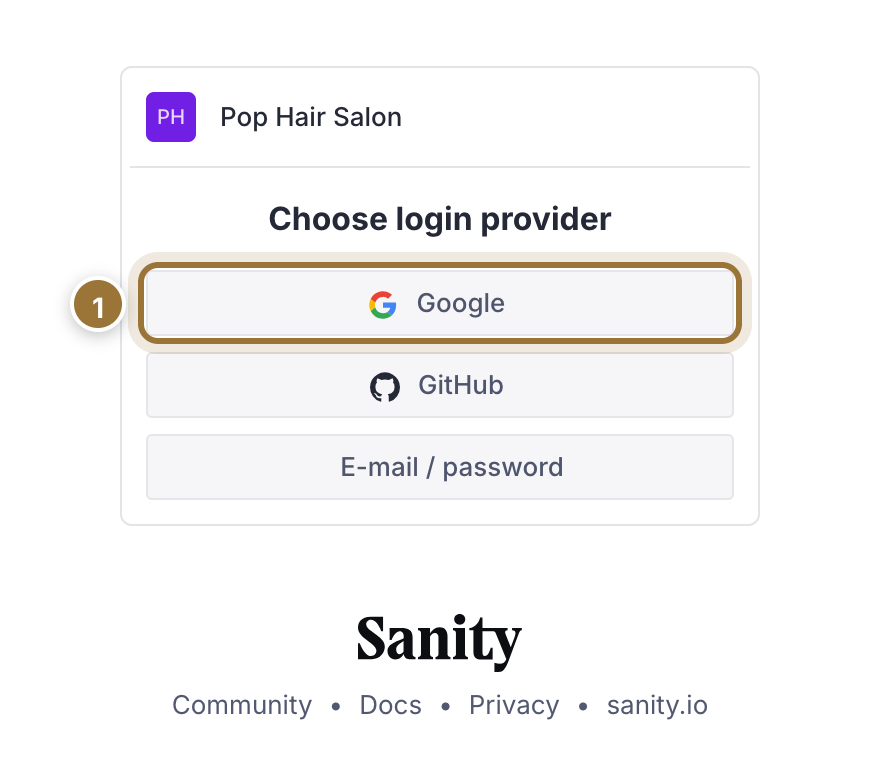
1. ábra — A belépési ablak. Mindig a Google gombbal lépj be.
Figyelem
A belépési ablak angol nyelvű, mert ez a Sanity saját oldala. Mindig ugyanazt a belépési módot használd: ha a meghívót Google-lel fogadtad el, később is a Google gombot válaszd. Más belépési móddal a rendszer új felhasználónak tekintene, és nem látnád a tartalmat.
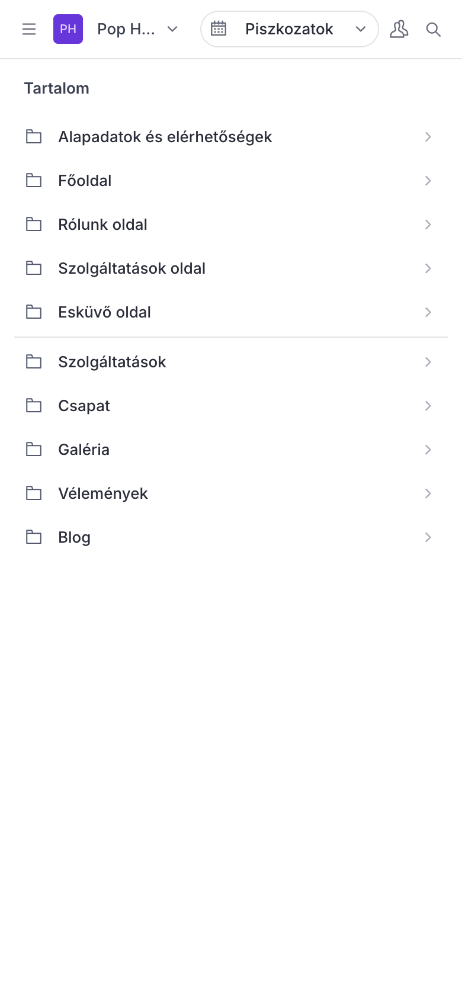
2. ábra — A szerkesztő telefonon.
Telefonon is működik
Ugyanez a cím telefonon is megnyílik (2. ábra). Gyors javításhoz — például a nyitvatartás módosításához vagy egy új galériakép feltöltéséhez — kényelmes. Hosszabb szövegek és blogposztok írásához a számítógép a kényelmesebb.
2. fejezet
A felület felépítése
Belépés után bal oldalt a Tartalom menü látható. Minden, amit a weboldalon módosítani tudsz, innen érhető el.
1Oldalak. Az egyes oldalak állandó szövegei és képei, valamint az alapadatok (telefonszám, cím, nyitvatartás). Ezekből mindig pontosan egy van.
2Listák. Szolgáltatások, csapattagok, galériaképek, vélemények és blogposztok. Ezekhez új elemet is felvehetsz.
3Új elem létrehozása bármelyik listába. Kényelmesebb azonban a listák tetején lévő + gombot használni.
4Keresés a teljes tartalomban.
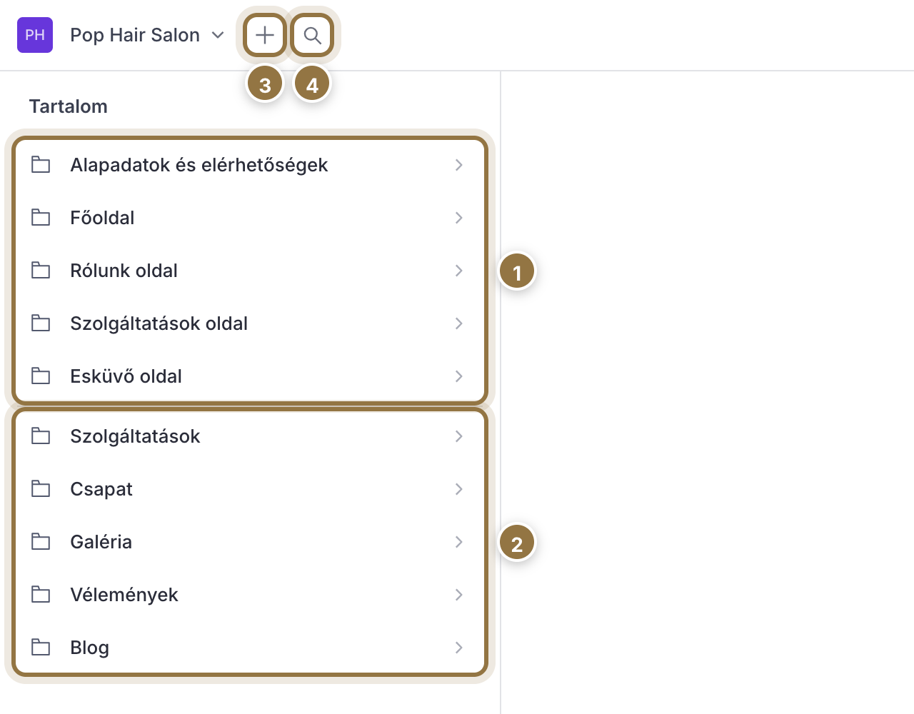
3. ábra — A Tartalom menü.
Menüpont
Mit szerkeszthetsz itt?
Hol látszik?
Alapadatok és elérhetőségek
Telefonszám, e-mail, cím, online időpontfoglalás linkje, nyitvatartás, közösségi oldalak, Google-értékelés
Az oldal több pontján: lábléc, Kapcsolat oldal, minden „Időpontfoglalás” gomb
Főoldal
A nyitókép főcíme és szövege, a Kevin Murphy szekció, a statisztikák
A felület magyar nyelvű, de néhány apró felirat angolul maradt — ilyen a Select (kép kiválasztása a korábban feltöltöttek közül), a Field actions és a Comments. Az utóbbi kettőre nincs szükséged. A jobb felső sarokban lévő Piszkozatok gombot hagyd így: ez a szerkesztési nézet.
3. fejezet
Szöveg módosítása
A módosítás menete minden tartalomnál ugyanaz. Példaként nézzük meg, hogyan írhatod át egy szolgáltatás adatait.
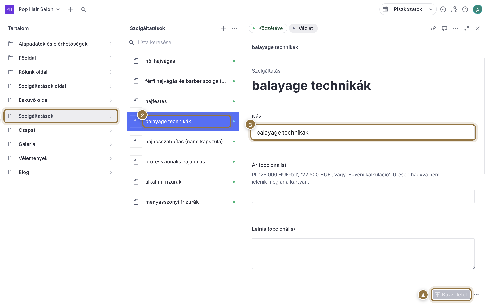
4. ábra — Balra a menü, középen a lista, jobbra a kiválasztott elem szerkesztője.
1Kattints a bal oldali menüben a Szolgáltatások pontra.
2Középen megjelenik a lista: kattints arra az elemre, amelyet módosítanál.
3Jobb oldalt megnyílik a szerkesztő. Kattints a mezőbe, és írd át a szöveget. Külön mentés nincs, a rendszer automatikusan menti a piszkozatot.
4Ha végeztél, kattints jobb alul a Közzététel gombra — a változás ekkor kerül ki a weboldalra (4. fejezet).
A szolgáltatások mezői
Név — így jelenik meg a szolgáltatás a Szolgáltatások oldalon.
Ár (opcionális) — például „28.000 HUF-tól” vagy „Egyéni kalkuláció”. Ha üresen hagyod, nem jelenik meg ár.
Leírás (opcionális) — egy-két mondatos ismertető.
Ikon — a szolgáltatás mellett megjelenő kis jel (olló, csillag, szív stb.).
Kiemelt szolgáltatás — bekapcsolva sötét háttérrel, hangsúlyosan jelenik meg.
Sorrend — a kisebb szám kerül előrébb. Ugyanez a szabály érvényes a csapatra, a galériára és a véleményekre is.
Bekezdések
A hosszabb szövegmezőknél (például a Rólunk oldalon) több bekezdést is írhatsz: a bekezdéseket egy üres sorral válaszd el — vagyis nyomj kétszer Entert.
4. fejezet
Közzététel és visszavonás
A legfontosabb szabály: a weboldalon csak az jelenik meg, amit közzétettél. Amíg nem kattintasz a Közzététel gombra, a módosítás biztonságban, piszkozatként vár, a látogatók pedig a korábbi változatot látják.
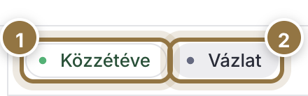
5. ábra — Az állapotjelzők a szerkesztő bal felső sarkában.
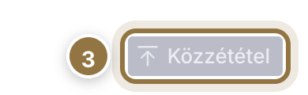
6. ábra — A Közzététel gomb a szerkesztő jobb alsó sarkában.
1Közzétéve — a weboldalon jelenleg látható változat.
2Vázlat — a szerkesztés alatt álló változat (piszkozat). Itt dolgozol.
3Közzététel — amíg nincs módosítás, halvány és nem kattintható. Amint változtatsz valamit, aktív lesz: kattints rá, és a változás kikerül a weboldalra.
A weboldal a közzététel után általában pár másodpercen belül frissül. Ha mégsem látod a változást, töltsd újra az oldalt a böngészőben (Mac: Cmd + Shift + R, Windows: Ctrl + F5).
Ha valamit visszavonnál
Még nem tetted közzé? Kattints a Közzététel melletti … gombra, és válaszd a Változtatások elvetése pontot. A piszkozat törlődik, a weboldalon minden marad a régiben.
Már közzétetted? A szerkesztő jobb felső sarkában kattints a … gombra 1, majd a Változások áttekintése pontra 2. Az Előzmények fülön kattints a korábbi változatra, majd a Visszaállítás gombra, végül a Közzététel gombra.
Törlés
A Közzététel melletti … menü Törlés pontja az elemet azonnal leveszi a weboldalról. Ha valamit csak ideiglenesen vennél le, vagy bizonytalan vagy, inkább írj nekünk.
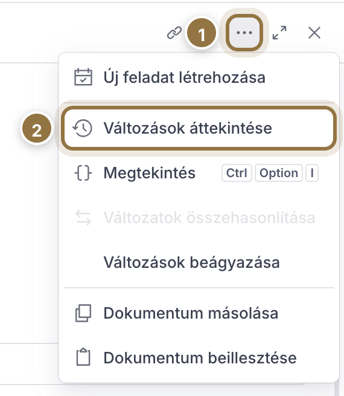
7. ábra — A szerkesztő jobb felső … menüje.
5. fejezet
Fotó feltöltése és cseréje
Minden képmező ugyanúgy működik — a csapattagok portréjánál, a galériában, a blogban és az oldalak képeinél is.
Új fotó feltöltése
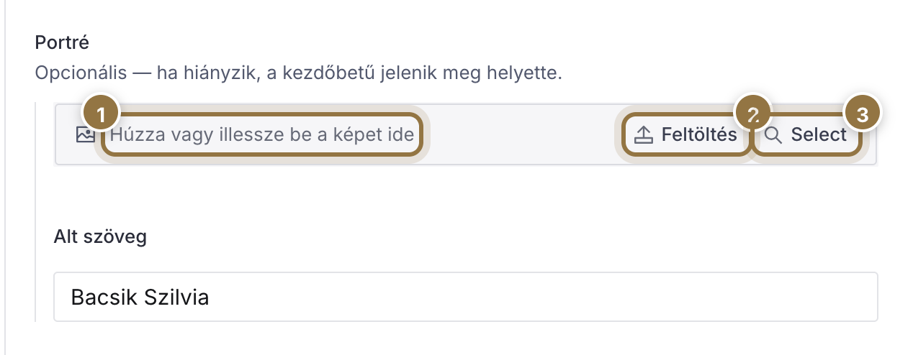
8. ábra — Üres képmező (itt: egy csapattag portréja).
1Húzd rá a fotót a számítógépről erre a sávra — vagy másold ki, és illeszd be ide.
2Feltöltés — fotó kiválasztása a számítógépről vagy a telefonról.
3Select — választás a korábban már feltöltött képek közül.
Feltöltés után töltsd ki az Alt szöveg mezőt: pár szóban írd le, mi látható a képen, például „szőke balayage hosszú hajon”. Ezt a Google és a képernyőolvasó programok használják.
Fotó cseréje vagy vágása
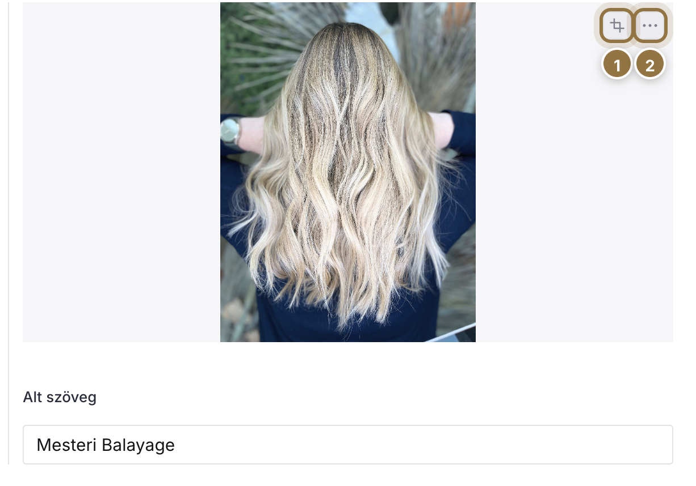
9. ábra — Ha az egeret a képre viszed, két gomb jelenik meg.
1Kép vágása — kijelölheted a kép legfontosabb részét; a weboldal a kép kivágásakor erre figyel.
2… gomb — megnyitja a 10. ábrán látható menüt.
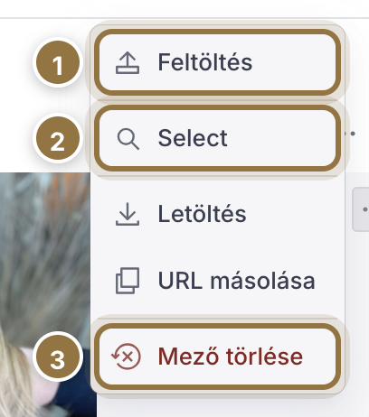
10. ábra — A … gomb menüje.
1Feltöltés — új fotó a régi helyére.
2Select — csere egy korábban feltöltött képre.
3Mező törlése — a kép eltávolítása.
A cserét is a Közzététel gombbal véglegesítsd.
Milyen fotó jó?
Telefonos fotó is tökéletes, átméretezni sem kell. Lehetőleg éles, világos képet válassz.
6. fejezet
Csapat
A Csapat menüpontban a Rólunk oldal „Csapatunk” részét szerkesztheted: itt adhatsz hozzá új csapattagot, és itt írhatod át a meglévők adatait.
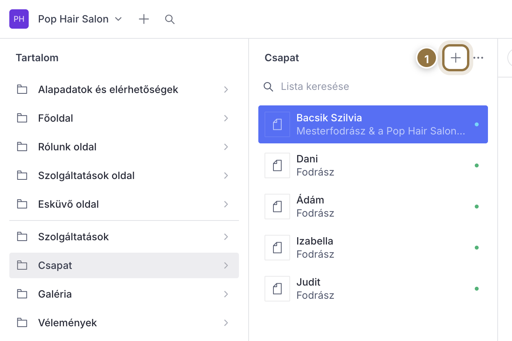
11. ábra — A lista tetején lévő + gombbal 1 veszel fel új csapattagot.
Új csapattag felvétele
Kattints a Csapat menüpontra, majd a lista tetején a + gombra (11. ábra).
Töltsd ki az adatlapot (12. ábra):
1Név
2Pozíció — például „Fodrász”.
3Specialitás — nem kötelező, például „Esküvői frizurák”.
4Életrajz — rövid bemutatkozás.
5Portré — fotó feltöltése (5. fejezet), Alt szövegnek elég a név. Ha nincs fotó, a név kezdőbetűje jelenik meg helyette.
6Sorrend — hányadikként jelenjen meg; a kisebb szám kerül előrébb.
Kattints a Közzététel gombra.
Meglévő csapattag módosításához kattints a nevére a listában. Ha valaki már nem dolgozik a szalonban, nyisd meg az adatlapját, és a Közzététel melletti … menüben válaszd a Törlés pontot.
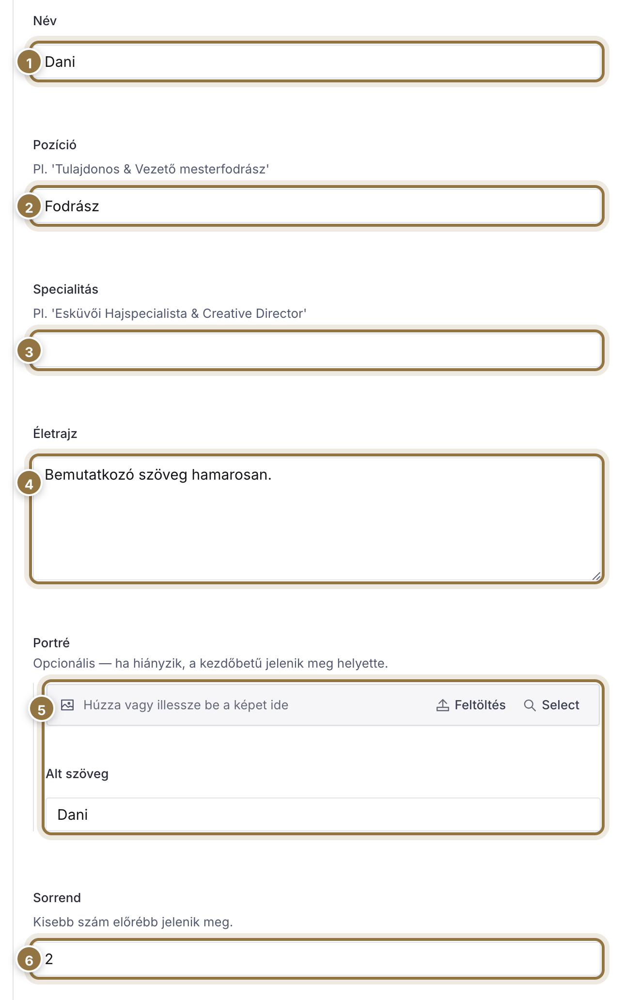
12. ábra — Egy csapattag adatlapja.
7. fejezet
Galéria
A Galéria menüpontban a Galéria oldal fotóit kezelheted. Minden fotó külön elem a listában.
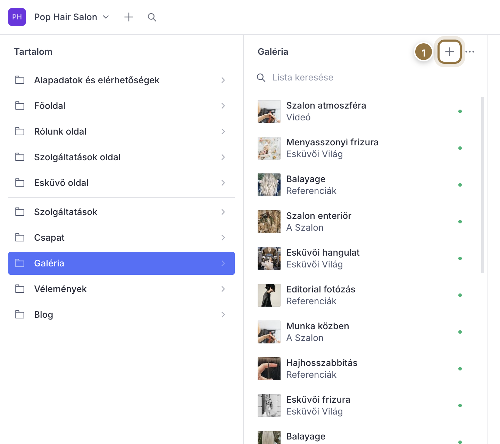
13. ábra — A Galéria lista. Új fotót a + gombbal 1 adhatsz hozzá.
Kattints a Galéria menüpontra, majd a + gombra.
Töltsd ki az adatlapot (14. ábra):
1Cím — rövid, egyszerű megnevezés, például „Balayage”.
2Kép és Alt szöveg — mindkettő kötelező.
3Kategória — melyik fül alatt jelenjen meg (lásd lent).
4Méret a rácsban — a „Kiemelt (nagy)” fotó kétszer akkora helyet kap.
5Sorrend — a kisebb szám kerül előrébb. Átrendezéshez elég átírni a számokat.
Kattints a Közzététel gombra.
Kategória
Mit tegyél ide?
Referenciák
A vendégeken készült munkák
A Szalon
A szalon terei, hangulata, munka közben
Esküvői Világ
Menyasszonyi és alkalmi frizurák
Videó
Videók — ezekhez kérj segítséget tőlünk
Fotó törlése: nyisd meg a fotót, és a Közzététel melletti … menüben válaszd a Törlés pontot.
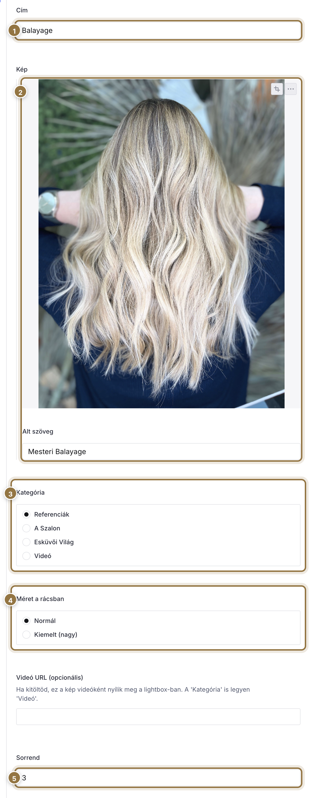
14. ábra — Egy galériakép adatlapja.
8. fejezet
Vélemények
A Vélemények menüpontban a főoldalon megjelenő vendégvéleményeket kezelheted. Jelenleg öt valódi Google-vélemény szerepel itt.
Új vélemény felvétele
Kattints a Vélemények menüpontra, majd a + gombra.
Töltsd ki az adatlapot (15. ábra):
1Vendég neve — ahogy a vendég a véleményt közzétette.
2Platform — Google, Facebook, Instagram vagy Egyéb.
3Vélemény szövege — másold be szó szerint.
4Csillagok — 1 és 5 közötti szám.
5Sorrend — a kisebb szám kerül előrébb.
Kattints a Közzététel gombra.
Google-értékelés
A Google-értékelés átlagát (például 4,9) és a vélemények számát az Alapadatok és elérhetőségek menüpontban frissítheted (10. fejezet). Érdemes időnként átírni a Google-profilod alapján.
Fontos
Csak valódi, vendégtől származó véleményt tegyél fel, szó szerint, a vendég nevével. Ha egy véleményt már nem szeretnél mutatni, töröld (… menü, Törlés).
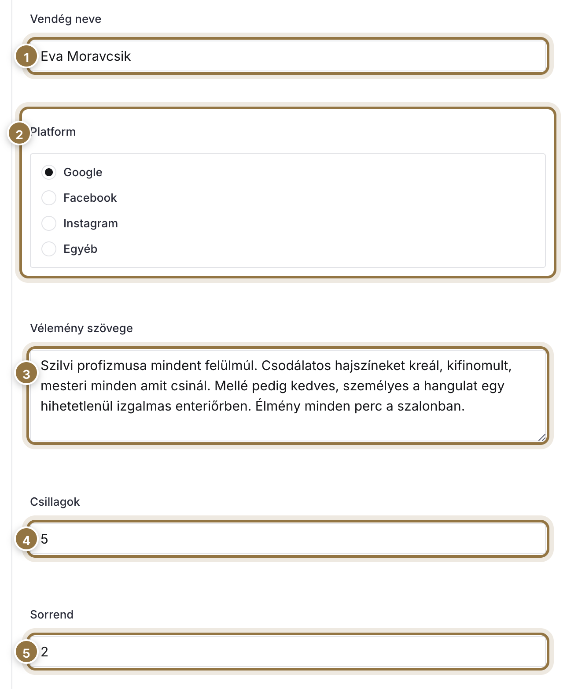
15. ábra — Egy vélemény adatlapja.
9. fejezet
Blog
A Blog menüpontban írhatsz új blogposztot — stílustippet, hajápolási tanácsot, esküvői inspirációt vagy akár videós (vlog) bejegyzést.
Kattints a Blog menüpontra, majd a + gombra. Üres posztsablon nyílik meg (16. ábra).
Cím1 — a poszt címe.
Slug (URL-rész)2 — kattints a Generálás gombra: a rendszer a címből elkészíti a poszt webcímét.
Publikálás dátuma3 — automatikusan a mai nap. A Blog oldal a legújabb poszttal kezdődik.
Kategória4 — Stílustippek, Esküvő, Hajápolás, Trendek, Szalon élet vagy Vlog (videó).
Borítókép5 és Alt szöveg — a listában és a poszt tetején jelenik meg.
Kivonat6 — egy-két mondatos összefoglaló a listához (legfeljebb 280 karakter).
Videó URL — nem kötelező. Ha beillesztesz egy YouTube- vagy Vimeo-linket, a poszt tetején lejátszható videó jelenik meg.
Tartalom7 — a poszt szövege. Új bekezdéshez nyomj Entert; a formázáshoz használd a mező tetején lévő eszköztárat (következő oldal).
Kattints a Közzététel gombra — a poszt megjelenik a Blog oldalon.
Figyelem
Már közzétett posztnál a Slug mezőt ne írd át, és a Generálás gombot se nyomd meg újra: megváltozna a poszt webcíme, és a korábban megosztott linkek nem működnének.
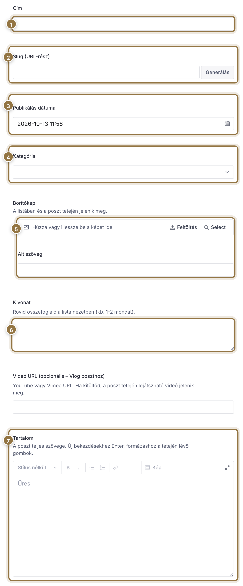
16. ábra — Új blogposzt adatlapja.
9. fejezet — folytatás
A blog szövegszerkesztője
A Tartalom mezőben úgy írhatsz, mint egy egyszerű szövegszerkesztőben: új bekezdéshez nyomj Entert. A mező tetején lévő eszköztárral formázhatod a szöveget.
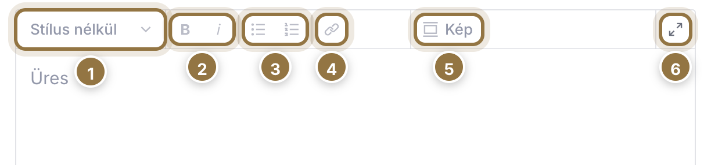
17. ábra — A Tartalom mező eszköztára.
1Bekezdéstípus — kattints a bekezdésbe, majd a lenyíló menüben válaszd ki: Normál szöveg, Nagy cím (H2), Alcím (H3) vagy Idézet.
2Félkövér és dőlt — jelöld ki a szöveget, majd kattints a gombra.
3Felsorolás és számozott lista.
4Link — jelöld ki a szöveget, kattints a gombra, és illeszd be a webcímet.
5Kép — fotó beszúrása a szöveg közé. Itt is töltsd ki az Alt szöveget; képaláírást is adhatsz hozzá.
6Teljes képernyő — hosszabb szövegnél kényelmesebb így írni; ugyanezzel a gombbal lépsz vissza.
Hasznos tudnivalók
Szöveg bemásolása Wordből vagy e-mailből is működik. Bemásolás után nézd át a formázást, és ahol kell, állítsd vissza Normál szövegre.
Tagolás: a hosszabb posztot érdemes Nagy cím (H2) és Alcím (H3) bekezdésekkel részekre bontani — így könnyebben olvasható, és a Google is jobban érti.
Videós (vlog) poszt: válaszd a Vlog (videó) kategóriát, és a Videó URL mezőbe illeszd be a YouTube- vagy Vimeo-linket.
Poszt módosítása: kattints a posztra a Blog listában, írd át, majd Közzététel. A Slug mezőhöz ilyenkor ne nyúlj.
Poszt törlése: nyisd meg a posztot, és a Közzététel melletti … menüben válaszd a Törlés pontot.
10. fejezet
Alapadatok és elérhetőségek
Az itt megadott adatok a weboldal több pontján egyszerre jelennek meg: a láblécben, a Kapcsolat oldalon és az időpontfoglaló gomboknál. Elég egy helyen átírni őket.
1Telefonszám — úgy írd be, ahogy meg szeretnéd jeleníteni (például +36 30 590 1766). A hívásgombot a rendszer ebből készíti el.
2E-mail cím
3Cím — a szalon címe.
4Időpontfoglalás URL — az online foglalási oldal linkje. Erre visz minden „Időpontfoglalás” gomb, ezért csak akkor írd át, ha a foglalási rendszer címe megváltozik.
Ne módosítsd
A Google Maps embed URL a weboldalon megjelenő térkép beállítása. Ha a szalon címe változna, szólj nekünk, és a térképet is átállítjuk.
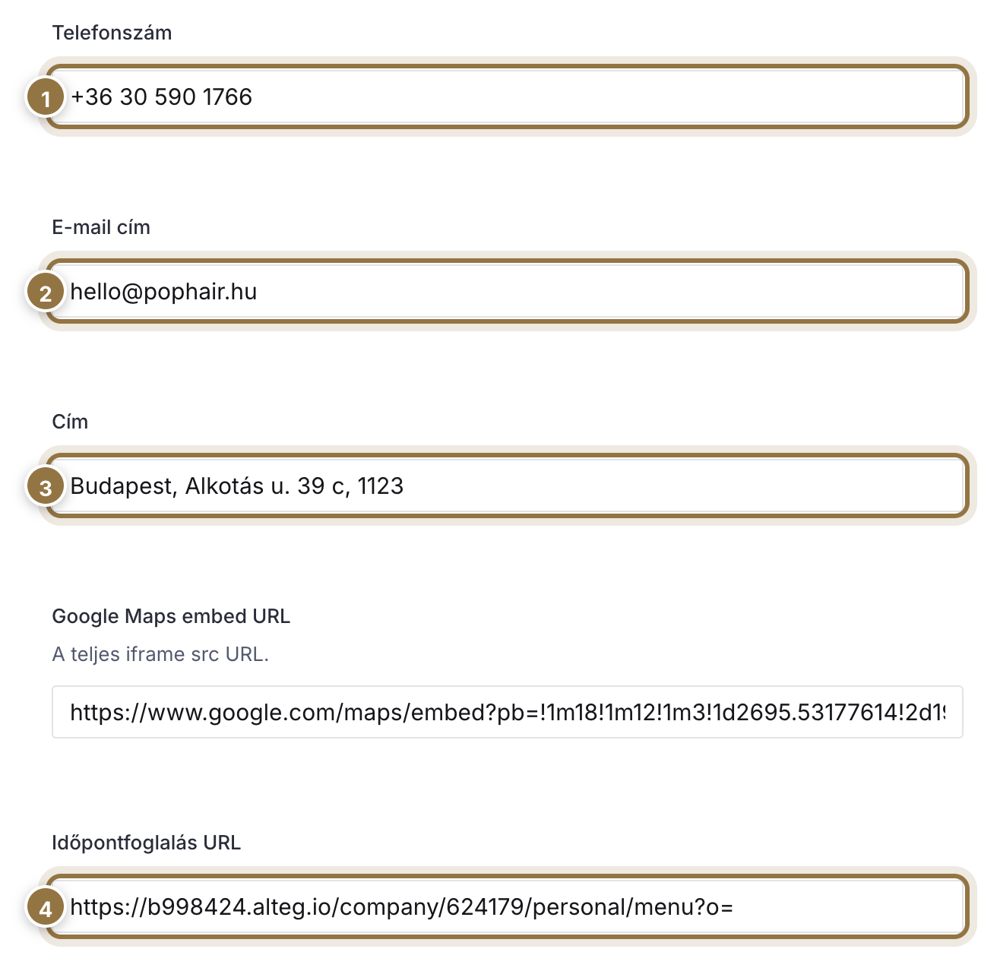
18. ábra — Elérhetőségek és az időpontfoglalás linkje.
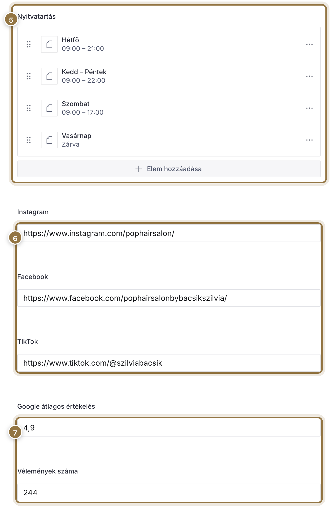
19. ábra — Nyitvatartás, közösségi oldalak, Google-értékelés.
5Nyitvatartás — kattints egy sorra a módosításhoz: a Címke a nap (például „Hétfő”), az Idő a nyitvatartás (például „09:00 – 21:00” vagy „Zárva”). Új sort az Elem hozzáadása gombbal veszel fel; a sorrendet a sor bal szélén lévő pöttyöknél fogva húzással változtathatod meg; törölni a sor jobb szélén lévő … gombbal tudsz.
6Instagram, Facebook, TikTok — a közösségi oldalak teljes linkje.
7Google átlagos értékelés és Vélemények száma — a Google-profilod alapján időnként frissítsd.
Végül ne felejtsd el: Közzététel.
11. fejezet
Az oldalak szövegei
A Főoldal, a Rólunk oldal, a Szolgáltatások oldal és az Esküvő oldal menüpontokban az adott oldal állandó szövegeit és képeit találod. Ezek nem listák: mindegyikből egy van, így itt nincs + gomb és törlés sem.
A mezők neve megmutatja, hol látszik a szöveg az oldalon. A „Hero” az oldal tetején lévő nagy nyitókép. A főoldalon például:
1Hero főcím – 1. sor — a nagy cím első sora.
2Hero főcím – 2. sor (arany) — a második, arany színű sor.
3Hero alszöveg — a cím alatti bemutatkozó szöveg.
A szöveg átírása után itt is a Közzététel gombbal véglegesíts.
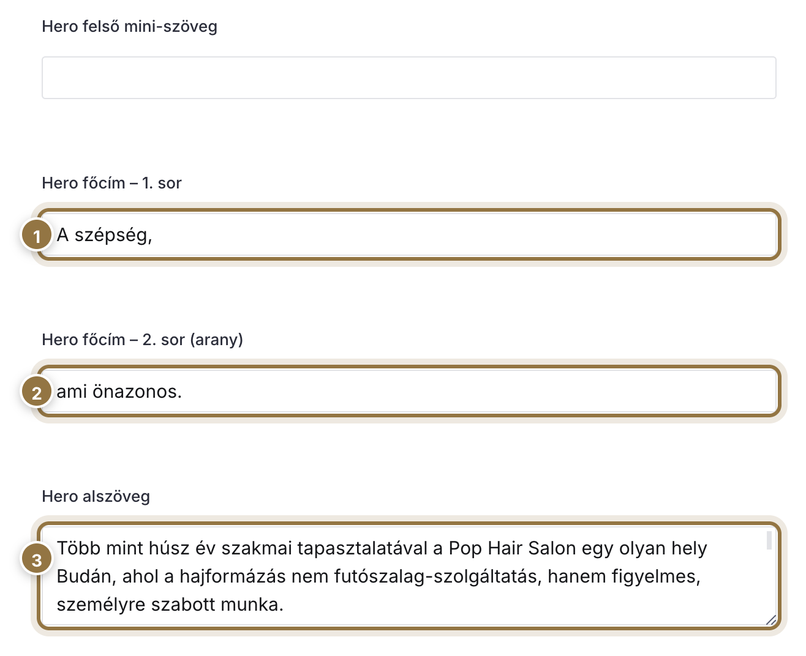
20. ábra — A Főoldal nyitóképének szövegei.
Menüpont
Mit szerkeszthetsz?
Főoldal
A nyitókép főcíme (két sor) és alszövege; a Kevin Murphy szekció címe, szövege és képe; a statisztikák (évek, értékelések száma)
Rólunk oldal
A bemutatkozás címe, kiemelt idézete, szövege és képe; a Kevin Murphy filozófia szövege és képe; a „Miért válassz minket?” cím és pontok; a záró idézet és szerzője
Szolgáltatások oldal
Bevezető szöveg (a lista felett), záró szöveg (a lista után); a hajhosszabbítás szekció címe, szövege és képe; az alsó sáv címe, szövege és képe
Esküvő oldal
A nyitókép szövegei, idézete és háttérképe; a szakértelem szövege és két képe; a statisztikák; a lookbook képei (4 db); a záró felhívás címe
Ne módosítsd
A Főoldalon lévő Hero videó (MP4) és Hero videó (WebM) mezők a nyitóvideó fájljait jelölik. Ezeket hagyd változatlanul — ha új videót szeretnél, küldd el nekünk, és mi kicseréljük.
12. fejezet
Fontos tudnivalók és segítség
Amit érdemes észben tartani
Csak a közzétett változás látszik. Amíg nem kattintasz a Közzététel gombra, a weboldal nem változik.
Nincs mit félned: a módosítások visszavonhatók (4. fejezet). A korábbi változatok csak korlátozott ideig érhetők el, ezért ha valami nem úgy sikerült, minél előbb javítsd — vagy szólj nekünk.
A Törlés azonnal leveszi az elemet a weboldalról.
Fotóknál mindig töltsd ki az Alt szöveget. A galériában ez kötelező is.
Már közzétett blogposzt Slug mezőjét ne módosítsd.
Amit nem itt szerkesztesz: az oldalak felépítése és dizájnja, a menü, az impresszum és az adatvédelmi tájékoztató, valamint a videók cseréje. Ezekhez írj nekünk, és megcsináljuk.
Gyors ellenőrzőlista minden módosításhoz
Megnyitottam a megfelelő menüpontot és elemet.
Átírtam a szöveget vagy feltöltöttem a fotót (Alt szöveggel).
Rákattintottam a Közzététel gombra.
Pár másodperc múlva megnéztem a weboldalon.
Ha elakadsz, keress minket bizalommal
Prometheus Digital Kft. — Bretz Árpád
+36 30 922 2042arpadbretz@prometheusdigital.hu
Írd meg röviden, mit szeretnél módosítani vagy hol akadtál el — egy képernyőkép sokat segít.